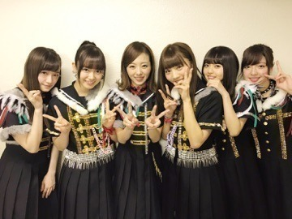
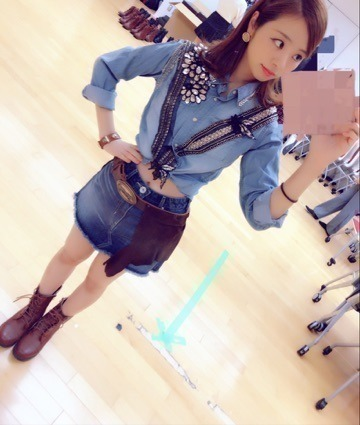
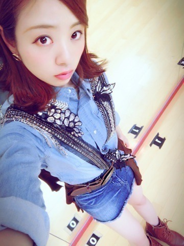
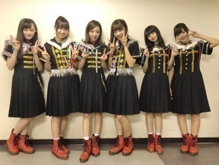

おつかれさま(^_^*)
ろってぃーです♡

武道館終わりました！
寒い中お集まりくださり本当にありがとうございます♡ 風邪ひいてないかな？
にしても、私は今回のliveで色んなことを感じることができ、新たな目標も出てきました！
7日はベストな緊張感とベストな余裕感で悔いの残らない最高に楽しいLiveをすることができました。
そして何より9日の「Xmasロックメドレー」、、、 これは乃木坂としては初の試み。選抜もアンダーもやった事のない事ね。
このXmasロックメドレーでは、のぎ團で「僕は咄嗟に嘘をついた」「生まれたままで」「狼に口笛を」「涙がまだ悲しみだった頃」「間にちょくちょくXmas song」を挟みつつ演奏をしました！
それに合わせてのぎ團以外のメンバーも歌と踊りのパフォーマンスをしました(^_^*)
これも、ちゃんと決まり楽譜を渡されたのが2週間前の事で、予定が合わな過ぎてギター ベース キーボード ドラムは各自自主練‼︎って形を取り，数日前からかな？ 楽器隊だけで集まり夜に練習をしていました♫
練習してる時は「できないよー！ 時間ないよー！ ぁぁぁー(´；Д；`)‼︎」っていつもなるけど，そうなりながらも必死にやって皆と合わせて1つの音になった時の感動が凄いのです♡
最後の練習の日に，飛鳥がいないからドラムの先生が叩いてくれたんだけど，全然弾けなくなっちゃって... 焦って部屋を出て一呼吸してから皆の元に戻ったんです。 その直後に飛鳥が来て，飛鳥のドラムに変わると何故かホッとしていつも通り落ち着いて弾く事ができ... それを見ていた先生たちが「バンドだな...」と言ってくれました。
私も嬉しかった。
先生はもちろん先生だから天才的に上手くてカッコいいのに，いつものメンバーじゃないといつも通りできない...。自分でも気づかない内に，「のぎ團」と言う絆が大きくなっているんだ...って事に気付かせてもらった瞬間でした。
今回のLiveは私達にとって大きかったと思う♡ 正直めちゃめちゃ緊張したし、プレッシャーにもなった。
この日はセンター企画で「今話したい、誰かがいる」のAメロや落ちサビをソロで歌い、間奏ではソロダンスもしましたが、、 その事も忘れる位。。
でも、「命は美しい」の後で、これでもかって位、息があがってたのはよーく覚えている。上手く歌えてたのかは自分でもよく覚えていない(*^^*)笑
今回のアンダーライブは今年1番だったかもしれない。 一人一人の強い思いが，客席にまで届けることができたんではないかと...
ほら話変わるけど，衣装めっっちゃ可愛い！！♡

デニムデニム...シャツ&ミニスカ♡
ベルト超可愛いし、お尻には茶色のフワフワがぶらさがってるの。
ヘソ出しも何気初だったかも。

因みに，Xmasメドレーの時の赤のブーツなんて，本気で可愛かった♡
これ、本番のステージに上がる直前に急いで撮ったんだよ。

では♡ノ